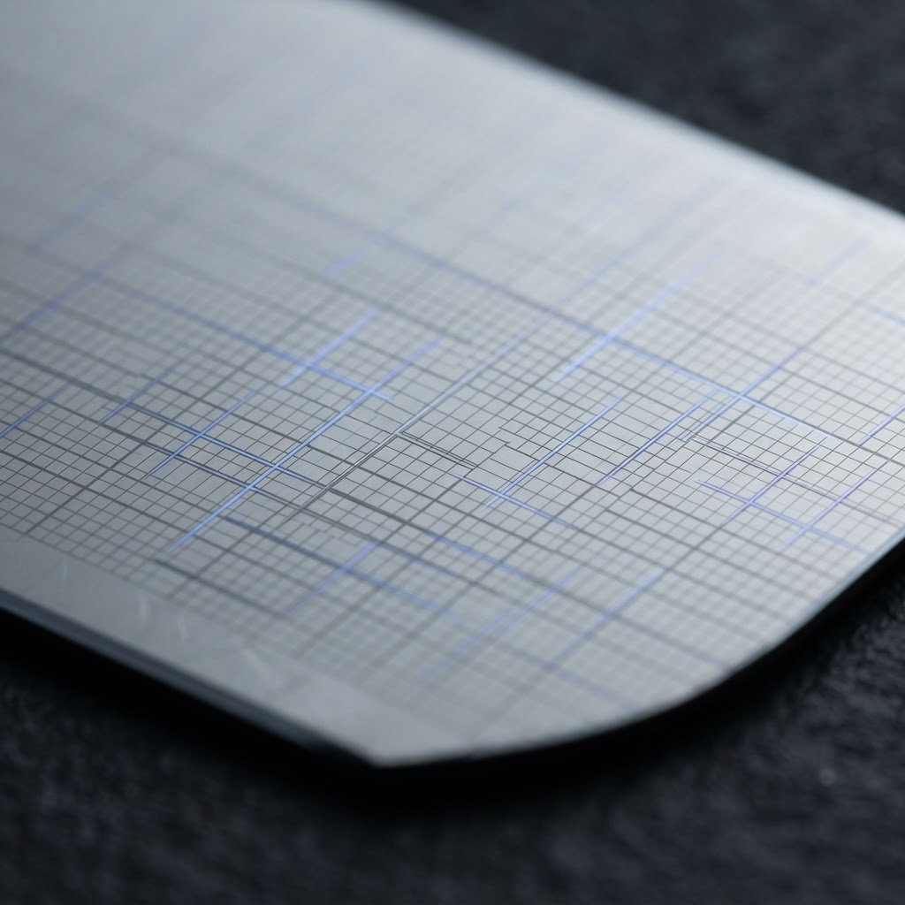
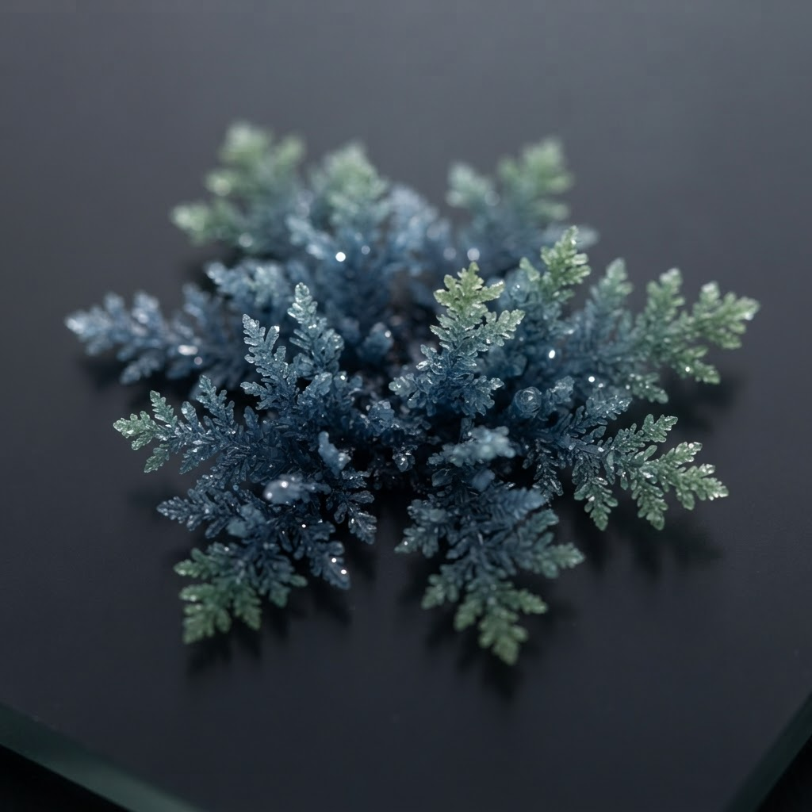
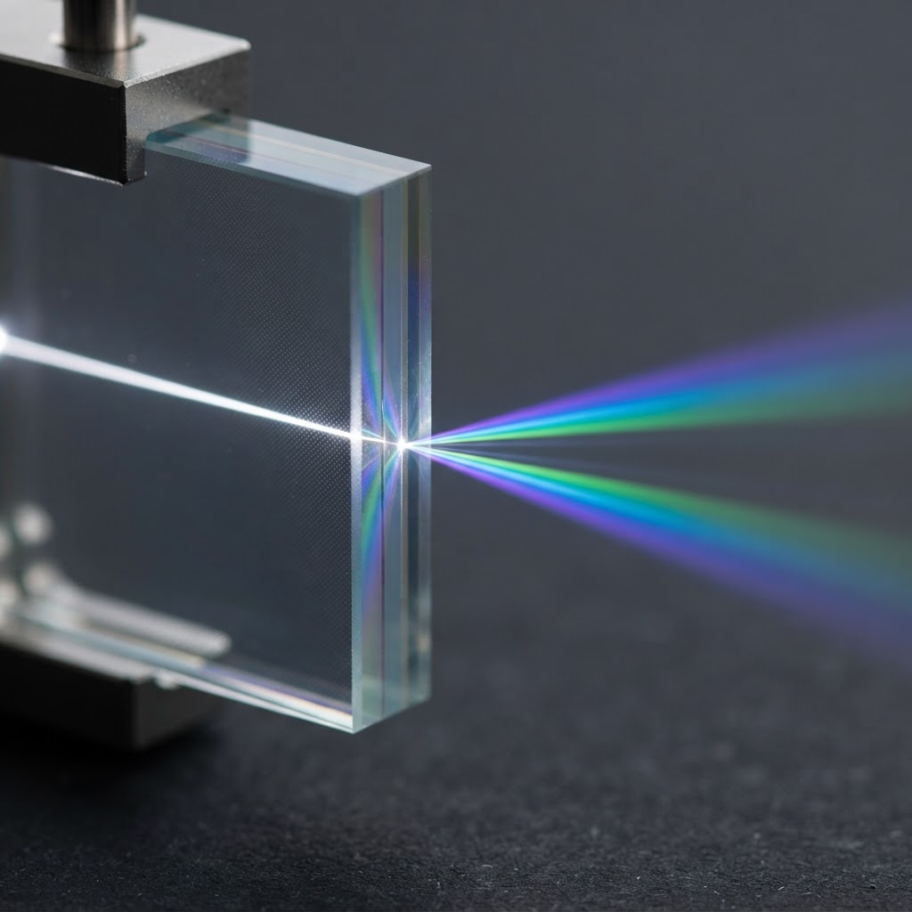

DIR-01
Open materials data
Curated results, charts, and provenance from computational materials research.
Open materials research · public benefit
Open Matter Labs develops reproducible materials research, data, and creative work with a commitment to human dignity and public access.
01 / Selected directions

DIR-01
Curated results, charts, and provenance from computational materials research.

DIR-02
Workflows designed so findings can be checked, compared, and responsibly reused.

DIR-03
Creative and public-interest work connecting materials, labor, place, and human rights.
02 / Dispatch
Short updates, published results, and notes between experiments — served from the lab's own backend.
Live
Public posting and moderated comments are in preparation; there is no public submission form. Updates are published by the lab.
03 / Field notes
Reference
Message-passing potentials achieving chemically accurate interatomic models across the periodic table.
Reference
Predicting millions of candidate crystals, with hundreds of thousands stable toward synthesis.
Practice
Studios and exhibitions that make material change visible — ice, light, woven structures, printed chitin.
04 / About
The lab is beginning with materials science and data papers. Results will be selected, documented, and published here without exposing private research repositories or unfinished computational infrastructure.